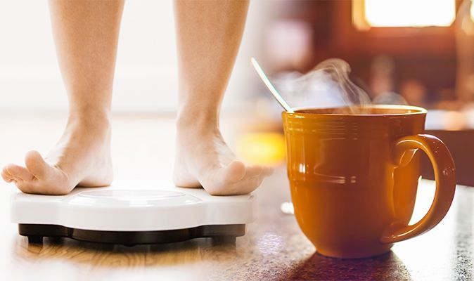
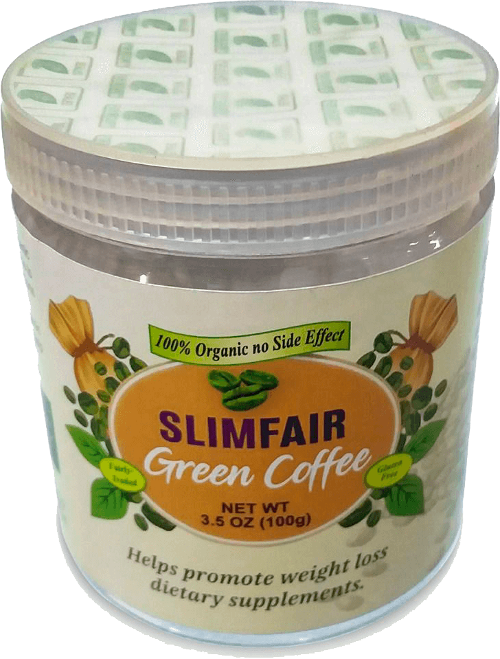

জেমস ল্যাঙ্গলি, জন্ম 19 জুলাই, 1960, আমেরিকান টেলিভিশনে পরিচিত একজন
ব্যক্তিত্ব, কার্ডিওথোরাকিক সার্জন, কলম্বিয়া বিশ্ববিদ্যালয়ের অধ্যাপক, সিউডোসায়েন্স এর
প্রবর্তক এবং লেখক।
গ্রীন কফির নির্যাস তৈরী হয় আনরোস্টেড কফি বিন থেকে। কফি বিনের মধ্যে রয়েছে পর্যাপ্ত পরিমানে
ক্লোরোজেনিক এ্যাসিড। যার অ্যান্টিঅক্সিডেন্টের প্রভাব রক্তচাপ নিয়ন্ত্রনে রাখে এবং ওজন কমাতে
সহায়তা করে।
রোস্টিং এর ফলে কফি বিনে ক্লোরোজেনিক এ্যাসিডের মাত্রা হ্রাস পায়।সে কারনেই সাধারণ কফি পান,
গ্রীন কফির মতো ওজন কমানোতে ততটা কার্যকরী ভূমিকা পালন করতে পারে না।
গ্রীন কফির প্রাকৃতিক নির্যাস এবং অন্যান্য ভেষজ উপাদানের সমন্বয়ে সম্পূর্ন প্রাকৃতিক উপায়ে
তৈরি হয়েছে গ্রীন কফি পাউডার।যা নিয়মিত পানে আপনি পাবেন বাড়তি ওজন ঝরিয়ে সুস্থ ও সতেজ শরীর।

বিভিন্ন আন্তর্জাতিক সংস্থার পরিসংখ্যান অনুযায়ী, বিশ্বের ৭০ শতাংশেরও বেশি লোক অতিরিক্ত ওজনগত
সমস্যা এবং ওজনগত সমস্যা যুক্ত দীর্ঘস্থায়ী রোগে ভুগছেন। নিঃসন্দেহে এই সাস্থ্য ও ওজনগত
সমস্যাগুলির বেশিরভাগই পরিবেশ দূষণ, মানসিক চাপ, অনিয়ন্ত্রিত জীবনযাত্রা বা অস্বাস্থ্যকর
ডায়েটের কারনে হয়ে থাকে। যা শরীরের রোগ প্রতিরোধ ক্ষমতা হ্রাস করে এবং হরমোন নিঃসরনের ক্ষেত্রেও
ভারসাম্যহীনতা ঘটিয়ে থাকে।
এমন কি পৃথিবীতে খুব অল্প সংখ্যক মানুষের স্থুলতার প্রেক্ষিতে তার জিনগত প্রবণতা কাজ করে।
বেশিরভাগ ক্ষেত্রেই তাদের ব্যক্তিগত জীবন যাত্রার পদ্ধতির কারনে প্রত্যেকের ওজন বৃদ্ধি পায়।
যাইহোক, এই জাতীয় রোগের বিরুদ্ধে লড়াই একটি জটিল এবং দীর্ঘ প্রক্রিয়া, যদি না আপনি সঠিক
উপায়ে তা সমাধান করার চেষ্টা করেন।
বিজ্ঞানীরা মানবজাতির উপর বিভিন্ন ধরনের পণ্য এবং এর
প্রভাব নিয়ে নিয়মিত পরীক্ষা-নিরীক্ষা করে চলেছেন।ম্যাসাচুসেটস-এর আমেরিকান বিজ্ঞানীরা গ্রীন
কফি নামক বায়োঅ্যাকটিভ পণ্যগুলির বৈশিষ্ট্যগুলিকে কেন্দ্র করে সফলভাবে একটি গবেষণা পরিচালনা
করেছেন। ল্যাবরেটরি পরীক্ষা এবং ক্লিনিকাল স্টাডিতে দেখা গেছে যে, সাধারণ প্রাকৃতিক উপাদানগুলির
অনন্য সংমিশ্রণ, এক আশ্চর্যজনক পণ্য তৈরি করেছে যাতে আছে ফ্যাট বার্ন করার শক্তিশালী বৈশিষ্ট্য।

নব
আবিষ্কৃত এই অনন্য পণ্যটির নাম হল গ্রীন কফি। যারা প্রতিনিয়ত এই পানীয়টি পান করেছেন তারা এর ফলাফল
দ্বারা চমৎকৃত হন। যথাযথ বিশ্লেষন এবং নিরীক্ষার মাধ্যমে প্রমানিত হয় যে এই অর্গানিক পন্যটি ওজন
কমানোয় অত্যন্ত কার্যকরী ভুমিকা পালন করে।
এর প্রাকৃতিক উপাদানগুলির বৈশিষ্ট্য হল, এটি রক্তে
গ্লূকোজের মাত্রা নিয়ন্ত্রণ করে, যা ডায়াবেটিস রোগীদের ওজন হ্রাস করতে এবং তাদের স্বাভাবিক ওজন
বজায় রাখতে সহায়তা করে।নিয়মিত গ্রিন কফি পানের মাধ্যমে সুস্বাস্থ্য অর্জন করা সম্ভব। এই
স্বাস্থ্যকর পানীয়টি পান করার ফলে শরীরের বিভিন্ন প্রক্রিয়াগুলি সচল হয়। শরীর কে করে তোলে সতেজ এবং
সুঠাম।
গ্রিন কফির প্রধান উপাদান হ'ল গ্রিন কফি বিনের নির্যাস। তাই এই পণ্য সম্পূর্ণ প্রাকৃতিক
এবং নিরাপদ । এর আশ্চর্যজনক বৈশিষ্ট্য হল এটি ক্ষুধা রোধ করে এবং শরীরের ক্যালোরি গ্রহণের মাত্রা
অনুযায়ী ফ্যাটকে বার্ণ করে।
গ্রীন কফি ছয় মাস ধরে বিভিন্ন ভাবে পরীক্ষা করা হয়েছে। এই
গবেষণাটি দেখায় যে পণ্যের কার্যকারিতা বয়স বা লিঙ্গের উপর নির্ভর করে না। ইতিবাচক ফলাফল অর্জন
করার জন্য, এই পানীয় নিয়মিত গ্রহণ করা উচিত।

এই অর্গানিক পণ্যটির অনন্য উপাদানসমূহ ক্লিনিক্যালি পরীক্ষা করা হয়েছে। পরীক্ষার ফলাফল অতন্ত
সন্তোষজনক। গ্রীন কফি বাড়তি পরিশ্রম ছাড়াই ওজন হ্রাস করতে সক্ষম। তবে অবশ্যই, এটিও মনে রাখতে হবে
যে, এই পণ্যটি কোনও অলৌকিক ঘটনা নয়; সর্ব্বোচ্চ ফলাফলের জন্য শারীরিক ক্রিয়াকলাপ এবং স্বাস্থ্যকর
ডায়েট মেনে চলতে হবে। এই অনন্য পণ্যটির সুবিধা গুলো হলঃ কোন পার্শ্ব প্রতিক্রিয়া ছাড়াই দ্রুত এবং
কার্যকরভাবে অতিরিক্ত মেদ ঝরাতে সক্ষম মেটবলিসম বৃদ্ধি করে রোগ প্রতিরোধ ক্ষমতা বাড়ায়।
উল্লেখযোগ্যভাবে ফ্যাট বার্ন করে ওজন হ্রাস করায়। এছাড়াও, ডায়াবেটিস বা হরমোন ভারসাম্যহীন
ব্যক্তিদের জন্য এই পণ্যটি একটি নিখুঁত সমাধান। গ্রীন কফি প্রচুর পরিমানে সেলুলাইট এ ভরপুর।
প্রাকৃতিক উপাদানগুলির অনন্য সংমিশ্রণের মাধ্যমে এটি শরীর থেকে টক্সিন দূর করে, ক্ষতিকারক
অণুজীবগুলি নিঃষ্কাশন করে। গ্রীন কফি শরীর থেকে অতিরিক্ত তরল অপসারণ করে, ফোলাভাব দূর করে,
গ্যাস্ট্রোইনটেস্টাইনাল ট্র্যাক্টকে পরিষ্কার এবং পুনরুদ্ধারে সহায়তা করে।
গ্রীন কফি
স্বাস্থ্য সুরক্ষায় অতুলনীয়। এতে আছে অনন্য বৈশিষ্ট্যের উপাদান সমুহ যা শরীর কে সুস্থ এবং কর্মক্ষম
রাখতে সক্ষম। গ্রীন কফির নির্যাস সংগৃহীত করা হয় সম্পূর্ন কাঁচা অবস্থায় থাকা কফি বিন থেকে।কোনোরকম
তাপের সংস্পর্শ ছাড়াই এই কফির নির্যাস সংগ্রহ এবং সংরক্ষন করা হয়। তাই এই পানীয়তে ক্যাফিনের ঘনত্ব
কম।সরাসরি কাঁচা অবস্থা থেকে সংরক্ষন করা হয় বলে এর প্রাকৃতিক সকল উপাদান এতে অটুট থাকে।
ফাইবার;
অ্যামিনো অ্যাসিড;
ট্যানিনস এবং এ্যাসেনশিয়াল অয়েল;
ট্রাইগোনেলিন
ক্লোরোজেনিক এসিড।
এই উপাদানগুলির প্রতিটি শরীরের নির্দিষ্ট ক্ষেত্রগুলিকে লক্ষ্য করে কাজ করে।
শরীরের ফ্যাটি টিস্যুর উপর সরাসরি কাজ করে ফ্যাট কে বার্ন করে। শরীরে কোনো রকম অস্বস্তি বা পার্শ্ব
প্রতিক্রিয়া ছাড়াই মেদ কমাতে সাহায্য করে।

নিয়মিত ৩০ দিন গ্রীন কফি পান করার পর

নিয়মিত ১৫ দিন গ্রীন কফি পান করার পর

নিয়মিত ২২ দিন গ্রীন কফি পান করার পর

নিয়মিত ১৮ দিন গ্রীন কফি পান করার পর
ডাক্তারদের মতামত
ডঃ অন্তনিয়াস রাজ সিং (ভারত)
ডায়েটিশিয়ান
কাজের
অভিজ্ঞতা - ২৭ বছর
100% অর্গানিক পণ্য প্রাকৃতিক উৎস হতে প্রাপ্ত ক্লোরোজেনিক অ্যাসিড সমৃদ্ধ (বার্নারস)
মেটাবোলিসম বৃদ্ধি করে ক্ষুধা নিয়ন্ত্রণ করে কোনও ডায়েটারি সীমাবদ্ধতা নেই। শরীরের ওজন
কমানোতে উদ্ভাবনী চিকিৎসা। কোনও রাসায়নিক দ্রব্য ছাড়াই সহজে এবং কার্যকরী উপাদান দিয়ে মাত্র ৪
সপ্তাহে ৩৩ কেজি পর্যন্ত কমাতে পারবেন।
ডাঃ আজিজা আবদুল আওয়াং (মালেশিয়া)
ডায়েটিশিয়ান
কাজের অভিজ্ঞতা - ১৮ বছর
ডায়েট, এক্সারসাইজ এবং "লাইপোসাকশন" এখন অতিরিক্ত ওজন কাটিয়ে উঠতে ব্যবহৃত প্রধান পদ্ধতি। তবে
স্থুলতাজনিত সমস্যায় ভুগতে থাকা মানুষের সংখ্যা ক্রমাগত বৃদ্ধি পাচ্ছে। উপরোক্ত পদ্ধতির
কোনওটিই জনপ্রিয় এবং কার্যকর হিসাবে বিবেচনা করা যায় না। গবেষণায় প্রাপ্ত প্রতিবেদন নিয়মিত
গ্রিন কফি পান করলে আপনার শরীর এর মেটাবলিসম সিস্টেম বৃদ্ধি হয়ে অতিরিক্ত মেদ কমাতে সহযোগিতা
করবে
তদন্ত
গ্রীন কফি পরীক্ষাগারে পরীক্ষার ফলাফল। স্বাস্থ্য গবেষণা ইনস্টিটিউট বিভাগ:
অতিরিক্ত ওজন বিশিষ্ট (১০০) একটি জনগোষ্ঠির উপর সমীক্ষা চালান হয়। সাধারণ ডায়েট
পরিবর্তন না করেই এক মাসের জন্য প্রতিদিন গ্রীন কফি তিনবার পান করে। পরীক্ষার সময়
নিম্নলিখিত ফলাফল প্রাপ্ত হয়েছিল:
১. ২৬ থেকে ৩৩কেজি পর্যন্ত ফ্যাট হ্রাস;
- ৩৩ কেজি ওজন
হ্রাস -৯৫%;
- - - ২৬কেজি ওজন হ্রাস -১০০%।
*
ওজন হ্রাস পরীক্ষার উদ্দেশ্যে হল ওজন হ্রাস করা এবং এটি ১ মাসের মধ্যে
পুনরায় যেন ফিরে না আসে
2. মেটাবোলিসম বৃদ্ধি।
৩. মানসিক এবং শারীরিক কার্যক্ষমতার উন্নতি।
৪. অনিদ্রা দূরীকরণ।
এটি প্রমাণিত হয়েছে যে, গ্রীন কফি কার্যকরভাবে আপনার মেটাবোলিসম
এবং ফ্যাট বার্ন প্রসেস কে উন্নত করে। অতিরিক্ত ওজনে ভুগছেন, বিপাকীয়
ব্যাধি অথবা ডায়াবেটিসে ভুগছেন এমন ব্যক্তিদের জন্য এটির পরামর্শ দেওয়া
হয়।
সতর্কতা ! নকল পণ্য থেকে সাবধান! এই শহর এবং মালয়েশিয়ায়, যে কোনও নির্মাতার
বিনামূল্যে সাইটে কেনা যাবে! আপনি অনেক ধরণের নকল গ্রীন কফি পাবেন মার্কেটে যা অনেক
কম মূল্যে ও প্রায় বিনামূল্যে পাবেন


আমি অবশ্যই এটি চেষ্টা করে দেখব এবং রিভিউ দিব। আমি এই বছর কলেজে যাচ্ছি। আমি একটি মেদহীন সুস্থ শরীর নিয়ে নতুন জীবন শুরু করতে চাই। আমাকে স্কুলে সবাই লজ্জা দিত।বিশেষত ছেলেরা। সবাই বলে আমি মোটা। আমি 22 কেজি কমাতে এবং একজন কলেজ ছাত্রীর মতো দেখতে চাই!